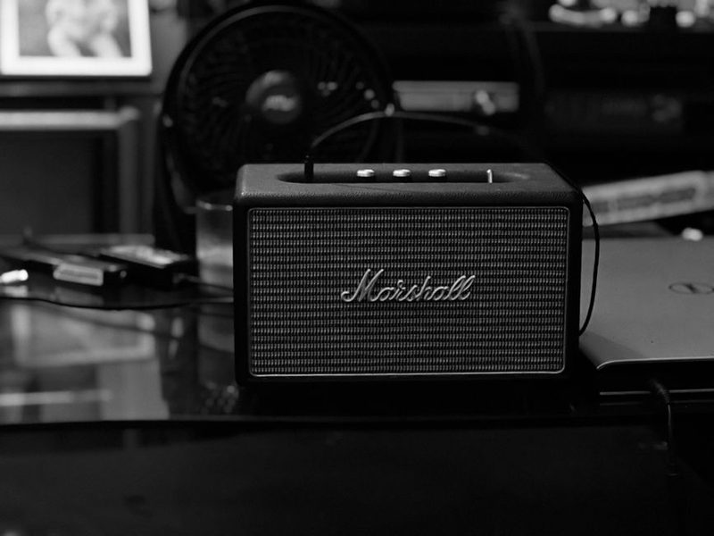

Edição de Maio
Escrevemos sobre o que se pode medir e ouvir: potência que se sustenta, autonomia com volume a sério, colocação na sala e o que a ficha técnica esconde.

Este caderno não faz análises de modelos nem indica marcas. Faz outra coisa, que ninguém costuma fazer: explica o que significam os números que aparecem nas caixas, quais é que dizem alguma coisa e como comparar dois aparelhos sem depender de adjectivos.
Quem chega aqui à procura de qual comprar vai sair com algo mais útil: um método para decidir sozinho, e uma ficha de escuta para comparar especificações lado a lado.
Índice · 6 folhas
Duas colunas anunciadas com o mesmo número de watts podem soar com o dobro da diferença. O número sozinho não diz nada — falta saber como foi medido.
A hora de autonomia anunciada corresponde a metade do volume, faixa suave e sem luzes. Basta subir o volume para o número cair para metade.
Antes de concluir que o som é mau, mude o sítio. É a alteração mais barata e a que mais mexe no resultado.
A queixa de imagem dessincronizada raramente é do ecrã: é o atraso do Bluetooth, e depende do codec que os dois lados negociaram.
A classificação cobre água limpa em condições definidas. Areia molhada e água salgada não fazem parte do ensaio — e são o que mata aparelhos no Verão.
A predefinição chamada de reforço de graves resolve numa faixa e estraga em dez. Cortar costuma soar melhor do que aumentar.
Anotado localmente. Nenhum endereço é transmitido.
Método
| Parâmetro | Valor | Nota |
|---|---|---|
| Potência contínua | sim | a medida que interessa |
| Potência de pico | não | valor de catálogo |
| Sensibilidade | sim | explica volume percebido |
| Resposta de frequência | só com ±dB | sem tolerância não diz nada |
| Autonomia | com reserva | medida a volume baixo |
Quem quiser começar por algum lado: a folha da potência explica os números da caixa, e a da colocação é a que muda o som sem gastar dinheiro nenhum. As restantes podem ser lidas soltas.